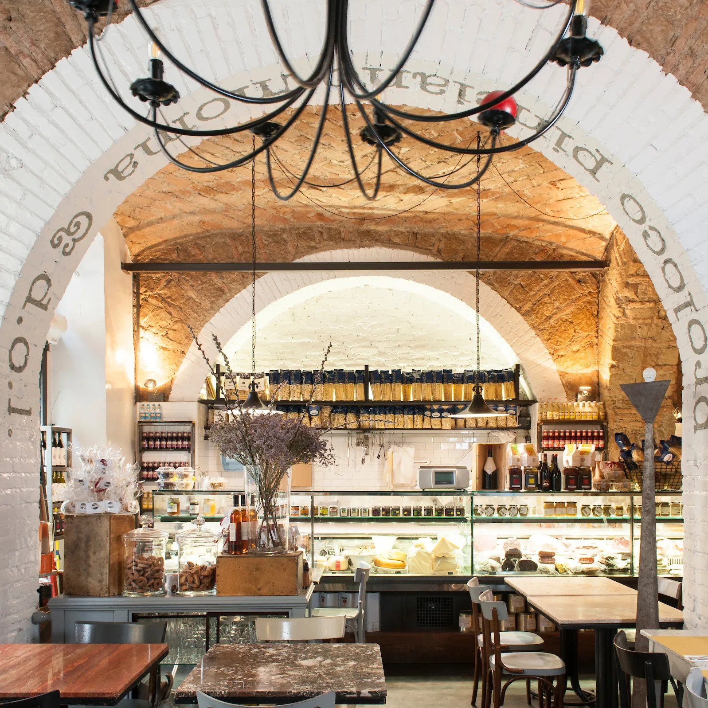
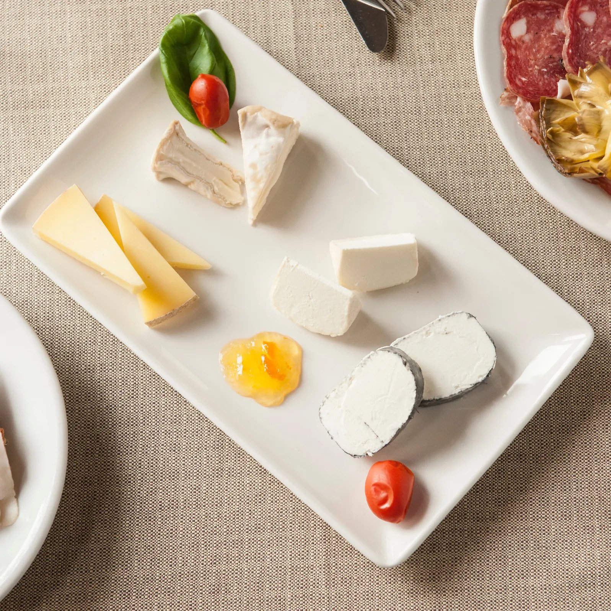
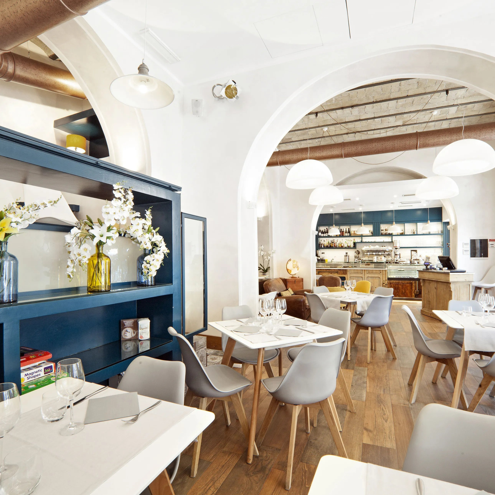

| Pro Loco Pinciano | ||
|---|---|---|
|  | Pro Loco Pinciano feels a bit like your stylish Italian friends’ holiday home, all farmhouse brick and stone, with an open deli stacked with cheese and jars of local jam, plus fat prosciutto hams dangling from the ceiling. It's not all for show: when you order a martini, the bartender garnishes it with a prosciutto slice. As for the menu, there’s something to suit every taste here, including crisp pizzas, bowls of pillowy ravioli, and platters of finely sliced cured meats. | Price: $$$ |
| La Tavernaccia | ||
|  | La Tavernaccia is old-school Roman all the way. Start with the misto affettati, a plate of cured meats and cheeses. Next, go for rigatoni all’amatriciana—a mix of chunky pork in tomato sauce, topped with pecorino cheese—then move on to the main event, maialino al forno (suckling pig served with roast potatoes). Wash the entire thing down with a generous helping of house red and a palate-cleansing lemon sorbet. | Price: $$ |
| Altrove Ristorante | ||
|  | Dishes at Altrove, a bright new addition to the largely residential Ostiense district, are inventive, but not overcomplicated. Lunch is a casual, canteen-like affair, with a choice of daily-changing meats, grains and sides. Even vegetarians, normally unlucky in this carnivorous city, will find something to like, with salads, soups, and cheese, plus fresh-from-the-oven breads. Come dinner, the cosmopolitan menu offers creative takes on Roman dishes, such as risotto d’acqua (carnaroli rice cooked in tomato-tinged water with lashings of pecorino cheese and a sprinkling of briny fish roe). | Price:$ |